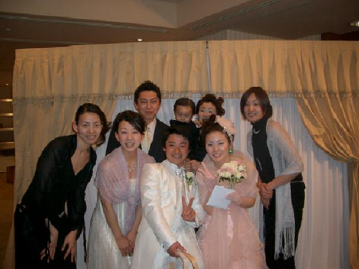

こんばんは。
遅くなりましたが、先週末に行った二つ目の結婚式について。
福岡での結婚式を途中抜けして
大分であったもう一人の結婚式へ。
新婦はJOMOのときに一緒に頑張ったマネージャー。
すっごく元気よくって、いつもPOWERをもらっていました。
今回は元JOMOメンバー（一部）が集合して、いろんな話で盛り上がっちゃいました。
呼んでくれてありがとう。
ｾｲの美人な姿に惚れ惚れでした。ずっとお幸せに。

トラックバック(0)
このブログ記事を参照しているブログ一覧: 結婚式NO.２
このブログ記事に対するトラックバックURL: http://www.masanobuito.net/cgi-bin/mt/mt-tb.cgi/88
コメントを書く